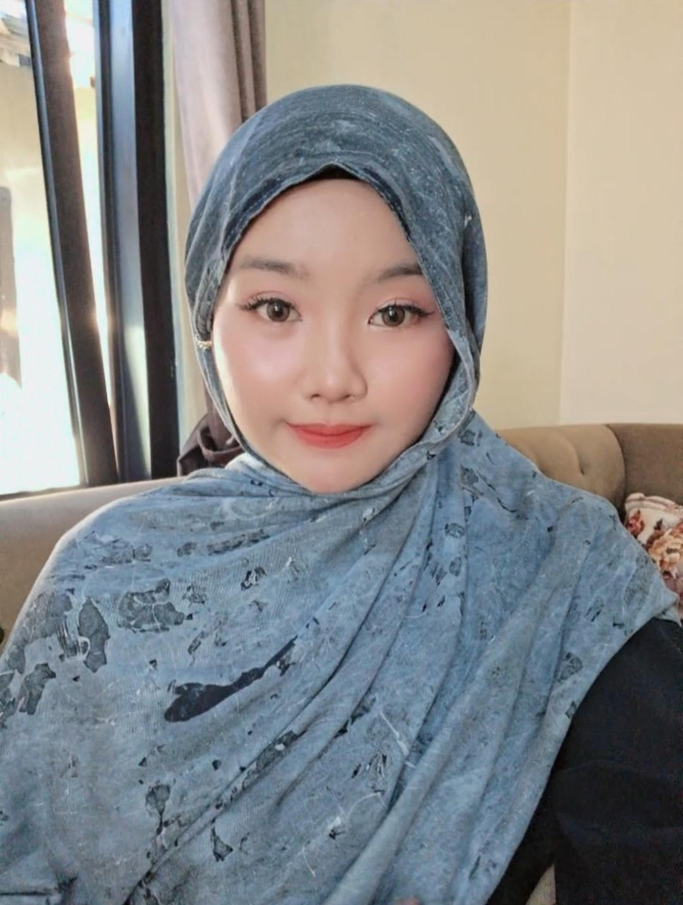

Sekarang - Masih Menempuh Pendidikan
Jurusan terkait teknologi informasi, aktif dalam kegiatan sekolah.
2022- 2025
Aktif dalam kegiatan ekstrakurikuler.
2016 - 2022
Mengenal minat pada seni dan olahraga.
Mempelajari HTML, CSS, dan Figma dll. Pernah membuat tugas web sekolah, ingin belajar lebih banyak.
Menggunakan CapCut dan InShot untuk membuat video tentang diri sendiri dan kegiatan harian.
Mampu menari jenis tradisional dan kontemporer, sedang terus mengembangkan kemampuan.
Bisa bermain sebagai Libero dan Setter, suka bermain bersama teman-teman.
Bisa menyampaikan ide dengan jelas, mampu bekerja sama dalam tim.
Mampu mengatur waktu, suka mengerjakan tugas di luar rumah.
Pernah menjadi MC di acara desa.
Masih dalam tahap belajar, bisa membuat makanan sehari-hari dengan baik.
Aktif mengikuti:
PEMULA DI BIDANG PENGEMBANGAN WEBSITE DENGAN MINAT KREATIF
Saya memiliki minat besar pada pengembangan website dan sedang belajar dengan giat untuk meningkatkan kemampuan. Selain itu juga memiliki hobi kreatif dan suka mengerjakan tugas di berbagai tempat seperti cafe atau tempat wisata.
Suka belajar membuat website dan mendesain antarmuka pakai Figma.
Suka menjelajahi tempat baru seperti desa wisata, tempat bersejarah, dan cafe unik.
Membuat video tentang diri sendiri, perjalanan wisata, dan konten kreatif lainnya.
Suka menari dan bermain voli untuk bersenang-senang serta menjaga kesehatan.
Menjadi pengembang website yang handal dan kreatif, mampu membuat solusi digital yang bermanfaat.
Saya menghargai kerja keras, kejujuran, dan kebersamaan. Percaya setiap orang punya potensi besar untuk berkembang dan suka membantu orang lain. Saya juga cinta dengan budaya Indonesia dan suka menjelajahi tempat-tempat unik di sekitar saya.